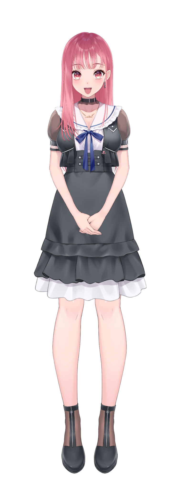

2026.04.05 案内役・出演
あしゅりーといっしょ！
VTuberと謎解き＆脱出イベント。
会場とオンラインで案内役を担当。
謎制作：謎杜プロジェクト
製作：株式会社コンディションイエロー
会場：配信スタジオ espace天
製作：株式会社コンディションイエロー
会場：配信スタジオ espace天
VTUBER / STORYTELLER
あしゅりー
VTuber・怪談師
イベントの司会から、企業PR、怪談・朗読まで。
会場でも、画面の向こうでも。
声を通じて、人と人をつなぎます。
01 / ON STAGE
02 / EVENTS & MC
過去の出演実績。画像を押すと拡大できます。
2026.04.05 案内役・出演
VTuberと謎解き＆脱出イベント。
会場とオンラインで案内役を担当。
2026.02.21 怪談イベント出演
怪談師・噺家との共演。
会場と配信で楽しめる怪談イベント。
2025.12.21 司会
専門家が登壇する
リアルイベントの司会を担当。
2025.10.11 怪談師デビュー
怪談師として初出演した
リアルイベント。
03 / PR & MEDIA
配信から動画制作、ボイスまで。
PR配信・動画制作を担当。
呼子朝市詰め合せの食レポと
司会を担当。
「RAID: Shadow Legends」公認ストリーマーとして、インタビュー記事に掲載（PR）。
04 / WORKS ARCHIVE
新しい実績から掲載
怪談トーク
Xスペースで怪談トークコラボを実施。
共演：怪談師・怪談作家 マシンガンジョーさん
案内役・イベント出演
VTuberと謎解き＆脱出イベントに案内役として出演。会場とオンラインで開催。
謎制作：謎杜プロジェクト／製作：株式会社コンディションイエロー／会場：配信スタジオ espace天
怪談イベント出演
怪談師・噺家と共演したリアルイベント。会場・配信で開催。
共演：牛抱せん夏さん、柳家花ごめ師匠
司会
リアルイベントの司会を担当。
登壇：観相学 岡井浄幸先生
PR配信
毎週火曜日にPR配信。公式チャンネルでの配信を含む。
RAID: Shadow Legends
雑誌掲載
自己PRコーナーに掲載。
VTuberスタイル
怪談イベント出演
怪談師としてのデビューとなったイベントに出演。
共演：牛抱せん夏さん、柳家花ごめ師匠
食レポ・PR配信
商品の食レポ配信を実施。
麺工房海練
ゲスト出演
吉宗鋼紀先生のチャンネルにゲスト出演。
マブラヴシリーズ原作者 吉宗鋼紀先生
PR配信
スラポンコロシアムのイベントPR配信を実施。
スラポンコロシアム
食レポ・PR配信
商品の食レポ配信を実施。
麺工房海練
PR
盛り上げ隊VTuberとして参加。
神田カレーグランプリ（そらのうえショッピングモール経由）
PR配信
VTuberイベントのPR配信を実施。
エギーパーティー
PR配信・動画制作
PR配信・動画制作を担当。
RAID: Shadow Legends
雑誌掲載
雑誌掲載。表紙にも名前掲載。
VTuberスタイル
PR配信
商品のPR配信を実施。
COMP
トークショー出演
ご当地トークショーに出演。
そらのうえショッピングモール
PR・街頭ビジョン広告掲載
コラボイベントにPR参加。目標達成により、新宿・渋谷の街頭ビジョン広告に掲載。
銀河英雄伝説（銀英伝ロンド）
食レポ・司会
呼子朝市詰め合せの食レポと司会を担当。
JAタウン／バーチャル物産展
スポンサーPR
スポンサー契約によるPR活動。
チルアウト
配信イベント出演
アプリ内ライブ配信イベントに出演。
KDDI αU（アルファユー）
雑誌掲載
「いま注目のVTuber79」ピックアップVTuberとして掲載。
VTuber mode
司会
ご当地VTuberのトークショーで司会を担当。
そらのうえショッピングモール
食レポ・コラボ出演
バーチャル物産展で食レポ・コラボ出演。
バーチャル物産展
食レポ
食レポ案件を担当。
100時間カレー
食レポ
バーチャル物産展で食レポ出演。
バーチャル物産展
地域PR
そらのうえショッピングモールで、地域応援大使に就任（任期1年間）。
そらのうえショッピングモール
食レポ
バーチャル物産展で食レポ出演。
バーチャル物産展
ゲスト出演
地域チューバー討論会に出演。
地域チューバー討論会
雑誌掲載
自己PRページに掲載。
VTuberスタイル
ゲスト出演
九州代表として出演。
地域チューバー討論会
雑誌掲載
注目VTuber Pick Upに掲載（1/2ページ）。
VTuber mode
ボイス
4種類のボイスを担当。
そらのうえショッピングモール
ゲスト出演
地域チューバーぷち討論会に出演。
地域チューバー討論会
雑誌掲載
自己PRページに掲載。
VTuberスタイル
食レポ・司会
食レポのプレゼンターと、アフタートークの司会を担当。
バーチャル物産展

MEET ASHLEE05 / PROFILE
ASHLEE
VTuber・怪談師。
イベント出演・司会、企業PR、食レポ、
怪談、朗読・ボイスなど、声を軸に活動しています。
リアル会場とバーチャルの両方で出演を重ね、
VTuber朗読劇団「劇団誉」でも活動しています。
衣装を見る
CONTACT
イベント出演・司会、PR配信、怪談、朗読・ボイスなど。
お仕事のご依頼・お問い合わせは、メインアカウントのXのDMで承ります。
企画内容・ご希望の日程・出演形式・ご予算を添えてご相談ください。